Deployment Inside Vehicle - Vehicle Scrapping Procedure
DEPLOYMENT INSIDE VEHICLE - VEHICLE SCRAPPING PROCEDURE
Deploy the inflator modules inside of the vehicle when destroying the vehicle or when salvaging the vehicle for parts. This includes, but is not limited to, the following situations:
- The vehicle has completed all useful life.
- Irreparable damage occurred to the vehicle in a non-deployment type accident.
- Irreparable damage occurred to the vehicle during a theft.
- The vehicle is being salvaged for parts to be used on a vehicle with a different VIN, as opposed to rebuilding as the same VIN.
CAUTION: When deploying a SIR component for disposal, perform the deployment procedures in the order listed. Failure to observe the procedures in the order listed may result in personal injury.
1. Lower the driver and passenger windows.
2. Turn the ignition switch to the OFF position and remove the ignition key.
3. Check that all inflator modules which will be deployed are mounted securely.
- Driver inflator module is secured to the steering wheel.
- Passenger inflator module is secured to the instrument panel.
- Left roof rail inflator module is secured to the left roof rail.
- Right roof rail inflator module is secured to the right roof rail.
4. Put on safety glasses.
5. Remove all loose objects from the front seats.
6. CAUTION: A deployed dual stage inflator module will look the same whether one or both stages were used, always assume a deployed dual stage inflator module has an active stage 2. Improper handling or servicing can activate the inflator module and cause personal injury.
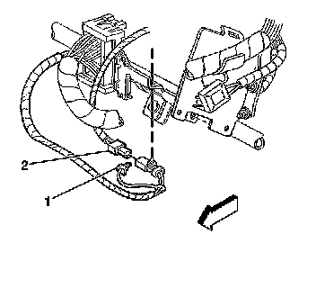
Disconnect the steering wheel module yellow connector (1) from vehicle harness yellow connector (2).
7. IMPORTANT: If the vehicle is equipped with dual stage air bags the steering wheel module and I/P module will each have 4 wires. Refer to SIR Connector End Views for determining high and low circuits.
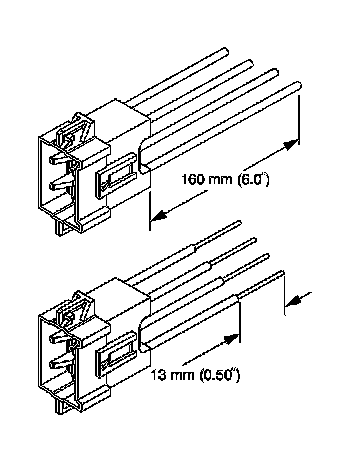
Cut the yellow harness connector out of the vehicle, leaving at least 16 cm (6 in) of wire at the connector.
8. Strip 13 mm (0.5 in) of insulation from each of the connector wire leads.
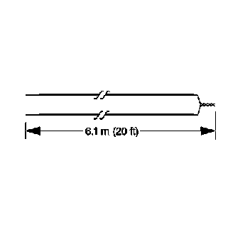
9. Cut two 6.1 m (20 ft) deployment wires from a 0.8 mm (18 gage) or thicker multi-strand wire. Use these wires to fabricate the driver deployment harness.
10. Strip 13 mm (0.5 in) of insulation from both ends of the wires.
11. Twist together one end from each of the wires in order to short the wires. Deployment wires shall remain shorted, and not connected to a power source until you are ready to deploy the inflator module.
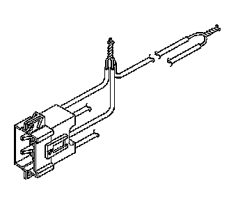
12. Twist together the 2 connector wire leads from the high circuits from both stages of the steering wheel module, to one set of deployment wires. Refer to SIR Connector End Views in order to determine the correct circuits.
13. Inspect that the 3-wire connection is secure.
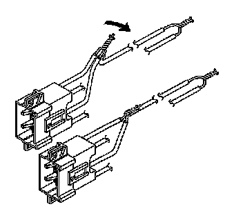
14. Bend flat the twisted connection.
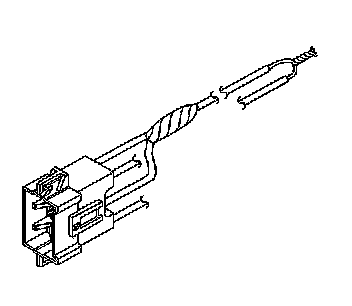
15. Secure and insulate the 3-wire connection to the deployment harness using electrical tape.
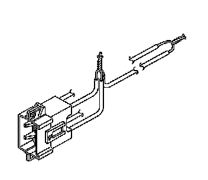
16. Twist together the 2 connector wire leads from the low circuits from both stages of the steering wheel module, to one set of deployment wires. Refer to SIR Connector End Views in order to determine the correct circuits.
17. Inspect that the 3-wire connection is secure.
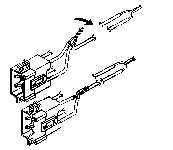
18. Bend flat the twisted connection.
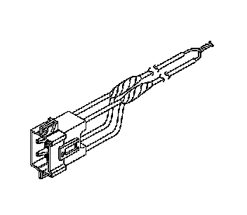
19. Secure and insulate the 3-wire connection to the deployment harness using electrical tape.
20. Connect the deployment harness to the connector on the steering wheel module.

21. Route the deployment harness out of the driver side of the vehicle.
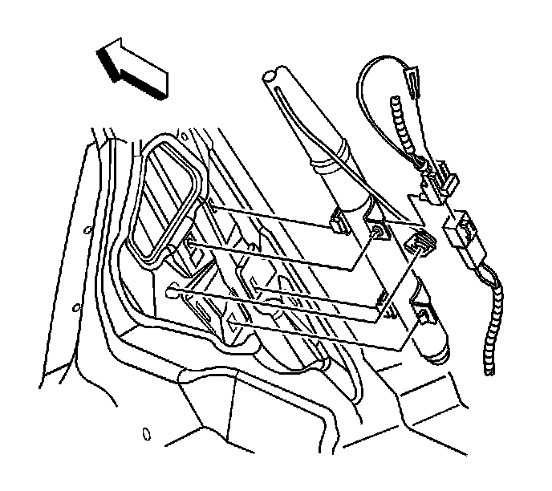
22. Disconnect the yellow left roof rail harness connector from the vehicle harness connector.
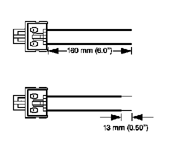
23. Cut the harness connector out of the vehicle, leaving at least 16 cm (6 in) of wire at the connector.
24. Strip 13 mm (0.5 in) of insulation from each of the connector wire leads.
25. Cut two 6.1 m (20 ft) deployment wires from a 0.8 mm (18 gage) or thicker multi-strand wire. These wires will be used to fabricate the roof rail air bag deployment harness.
26. Strip 13 mm (0.5 in) of insulation from both ends of the wires.
27. Twist together one end from each of the wires in order to short the wires.

28. Twist together one connector wire lead to one deployment wire.
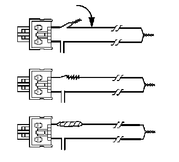
29. Bend flat the twisted connection.
30. Secure and insulate the connection using electrical tape.
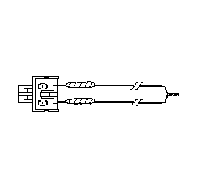
31. Twist together, bend, and tape the remaining connector wire lead to the remaining deployment wire.
32. Connect the deployment harness to the yellow connector of the roof rail module.
33. Route the deployment harness out of the driver side of the vehicle.
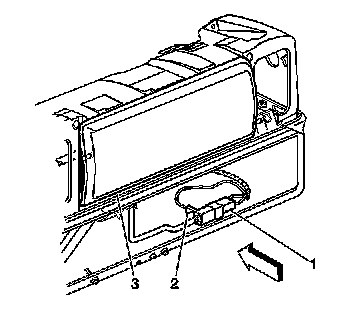
34. Disconnect the I/P module yellow harness connector (1) from the vehicle harness connector (2).
35. IMPORTANT: If the vehicle is equipped with dual stage air bags the steering wheel module and I/P module will each have 4 wires. Refer to SIR Connector End Views for determining high and low circuits.
Cut the yellow harness connector out of the vehicle, leaving at least 16 cm (6 in) of wire at the connector.
36. Strip 13 mm (0.5 in) of insulation from each of the connector wire leads.
37. Cut two 6.1 m (20 ft) deployment wires from a 0.8 mm (18 gage) or thicker multi-strand wire. These wires will be used to fabricate the passenger deployment harness.
38. Strip 13 mm (0.5 in) of insulation from both ends of the wires.
39. Twist together one end from each of the wires in order to short the wires.
40. Twist together the 2 connector wire leads from the high circuits from both stages of the I/P module to one set of deployment wires. Refer to SIR Connector End Views in order to determine the correct circuits.
41. Inspect that the 3-wire connection is secure.
42. Bend flat the twisted connection.
43. Secure and insulate the 3-wire connection to the deployment harness using electrical tape.
44. Twist together the 2 connector wire leads from the low circuits from both stages of the I/P module to one set of deployment wires. Refer to SIR Connector End Views in order to determine the correct circuits.
45. Inspect that the 3-wire connection is secure.
46. Bend flat the twisted connection.
47. Secure and insulate the 3-wire connection to the deployment harness using electrical tape.
48. Connect the deployment harness to the I/P module in-line connector.
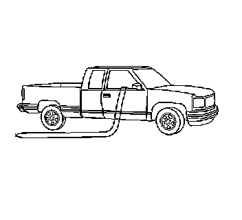
49. Route the deployment harness out of the passenger side of the vehicle.
50. Disconnect the yellow harness connector to the right roof rail air bag from the vehicle harness connector.
51. Cut the harness connector out of the vehicle, leaving at least 16 cm (6 in) of wire at the connector.
52. Strip 13 mm (0.5 in) of insulation from each of the connector wire leads.
53. Cut two 6.1 m (20 ft) deployment wires from a 0.8 mm (18 gage) or thicker multi-strand wire. These wires will be used to fabricate the roof rail module deployment harness.
54. Strip 13 mm (0.5 in) of insulation from both ends of the wires.
55. Twist together one end from each of the wires in order to short the wires.
56. Twist together one connector wire lead to one deployment wire.
57. Bend flat the twisted connection.
58. Secure and insulate the connection using electrical tape.
59. Twist together, bend, and tape the remaining connector wire lead to the remaining deployment wire.
60. Connect the deployment harness to the roof rail module yellow connector.
61. Route the deployment harness out of the passenger side of the vehicle.
62. Completely cover the windshield and the front door window openings with a drop cloth.
63. Stretch to the full length all of the deployment harness wires on the right side of the vehicle.
64. Deploy each deployment loop one at a time.
65. Place a power source, 12 V minimum / 2 A minimum, such as a vehicle battery, near the shorted end of the harnesses.
66. Separate one set of wires and touch the wire ends to the power source in order to deploy the selected inflator module.
67. Disconnect the deployment harness from the power source and twist the wire ends together.
68. Continue the same process with the remaining deployment harnesses.
69. Stretch to the full length all of the deployment harness wires on the left side of the vehicle.
70. Deploy each deployment loop one at a time.
71. Place a power source, 12 V minimum / 2 A minimum, such as a vehicle battery, near the shorted end of the harnesses.
72. Separate one set of wires and touch the wires ends to the power source in order to deploy the selected inflator modules.
73. Disconnect the deployment harness from the power source and twist the wire ends together.
74. Continue the same process with the remaining deployment harnesses.
75. Remove the drop cloth from the vehicle.
76. Disconnect all harnesses from the vehicle.
77. Discard the harnesses.
78. Scrap the vehicle in the same manner as a non-SIR equipped vehicle.
79. If one or all of the inflator modules did not deploy, perform the following steps to remove the undeployed modules from the vehicle:
- Inflatable Restraint Steering Wheel Module Replacement
- Inflatable Restraint Instrument Panel Module Replacement
- Inflatable Restraint Roof Rail Module Replacement (Front LH, Extended Wheelbase) Inflatable Restraint Roof Rail Module Replacement (Front LH, Standard Wheelbase) Inflatable Restraint Roof Rail Module Replacement (Front RH, Extended Wheelbase) Inflatable Restraint Roof Rail Module Replacement (Front RH, Standard Wheelbase) Inflatable Restraint Roof Rail Module Replacement (Rear LH, Avalanche/Escalade EXT) Inflatable Restraint Roof Rail Module Replacement (Rear LH, Extended Wheelbase) Inflatable Restraint Roof Rail Module Replacement (Rear LH, Standard Wheelbase) Inflatable Restraint Roof Rail Module Replacement (Rear RH, Avalanche/Escalade EXT) Inflatable Restraint Roof Rail Module Replacement (Rear RH, Extended Wheelbase) Inflatable Restraint Roof Rail Module Replacement (Rear RH, Standard Wheelbase)